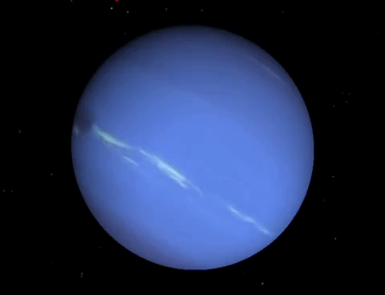

-Нептун – наименьший по размеру среди всех планет-гигантов Солнечной системы.
-Поглощение красного света метаном является важнейшим фактором, придающим атмосфере Нептуна синий оттенок.
-Нептун не виден невооруженным глазом.
-Во время пролета «Voyager 2» в 1989 году в южном полушарии Нептуна было обнаружено так называемое Большое Темное Пятно, аналогичное Большому Красному Пятну на Юпитере, однако 2 ноября 1994 года космический телескоп «Hubble» не обнаружил его на прежнем месте.
-Ученые экспериментально подтвердили, что на Нептуне и Уране небо в алмазах.
-Масса крупнейшего спутника Тритона составляет более чем 99,5% от суммарной массы всех спутников Нептуна.